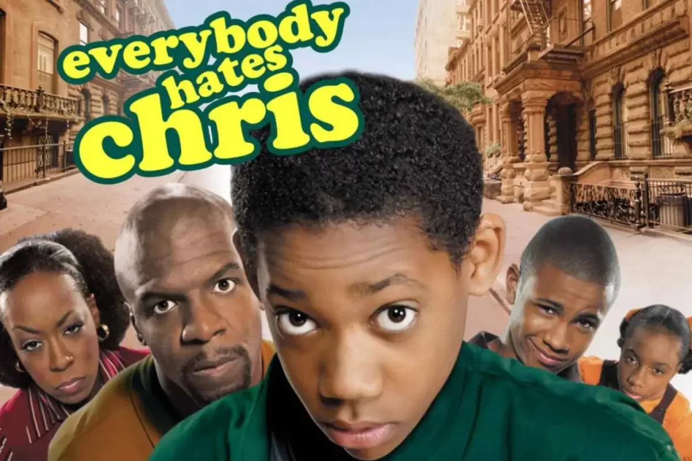
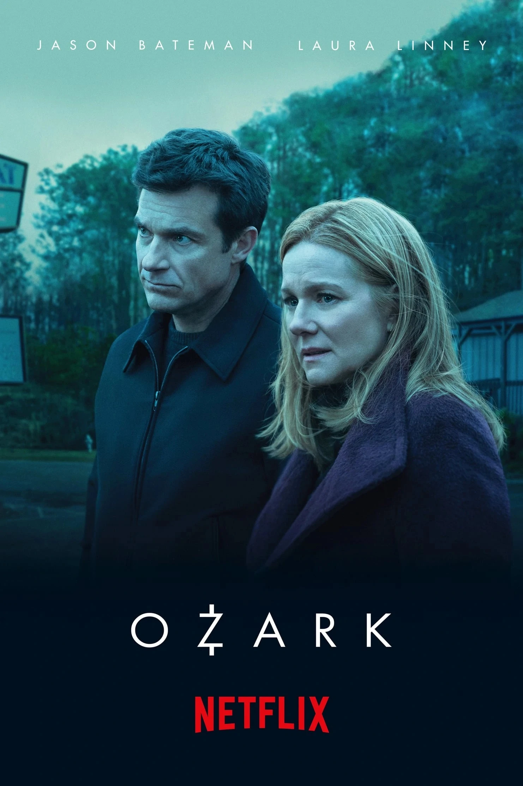

• Imformações importantes
• Algumas series muito boas tem nesse site em comum como:
• Breaking bad

• Todo mundo odeia o cris
• Ozark
• Sobre o IF campus Posse

o if e uma instituição brasileira que incrementa cursos técnicos em:
• Agropecuaria
• Informatica
Junto ao ensino médio.
•Dicas:
•O if e uma instituição onde todas as materia são bem explicadas porem
dificeis então se dedique e faça tudo com atenção
• O IF tem algulns projetos integradores como por exemplo o:
- Agro rosario

Esses projetos valem horas que servem para passar de ano então são muito importantes.